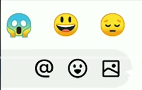
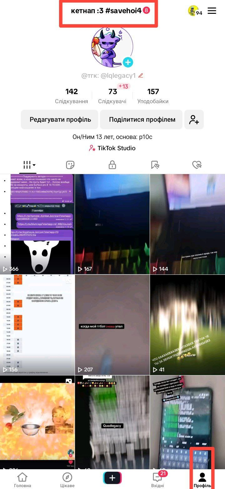
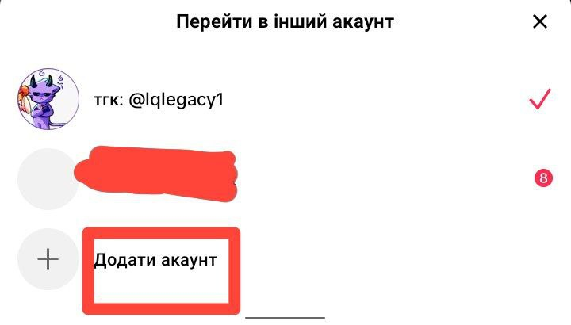
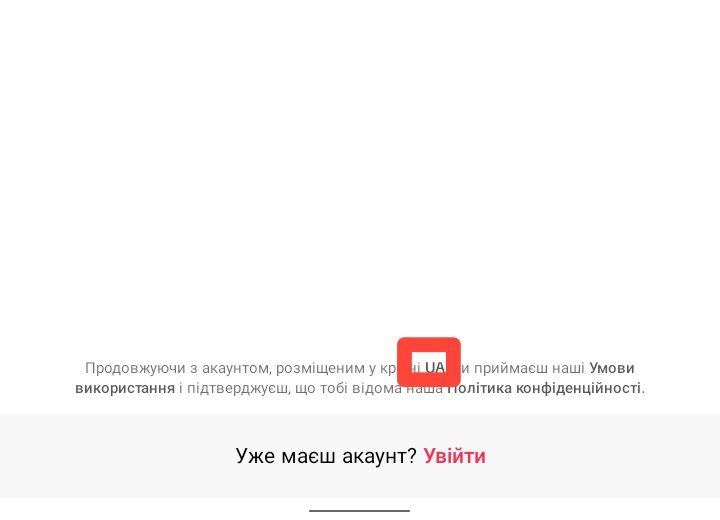
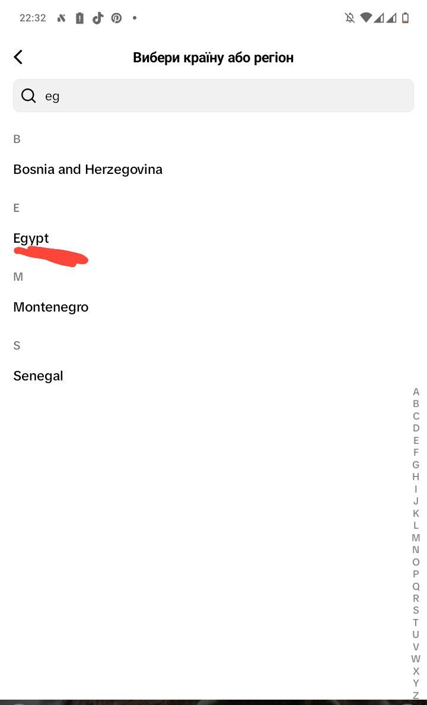

QuadLegacy Web Site
Article: "How to post a photo in a TikTok comment?" )
)
read on the right
Guide: Posting Photos in TikTok Comments
Hello everyone, I think it's no secret that you've all seen how someone posts photos on TikTok, there were even 18+ there... anyway, you yourself want a button like this:

button to send a picture via comments in tiktok
So what needs to be done?
Method 1 (tested by me):



create a new account and now you can own the photos, go throw trollfaces :laugh:
Method 2. Which doesn't work for me.
This method does not require a new account, what is needed: in the settings find the item "region" and stay in Egypt for 30 days (a month), which can be done via VPN, but I can't do it because I don't have time for it. If anyone succeeds, write somewhere =)